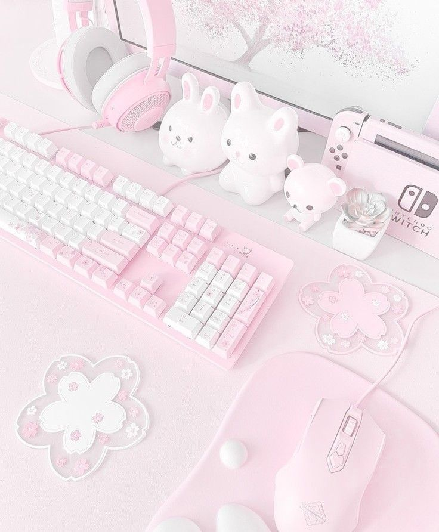

Hello, my name is Sagaana Sivasundaram. I am 18 years old and currently a student at VISTA College in Heerlen, where I am training to become a Software Developer. I have an Sri Lankan ethnicity but hold Dutch nationality, as I've lived in the Netherlands for most of my life. I live with my parents and my younger brother, who is 15 years old, in Geleen. I'm a pretty organized person, whether it's managing my daily life or creating a well-structured website. I'm excited to continue growing both personally and professionally.



Music
I’m really into K-pop, especially NewJeans. Their songs are on repeat, and I love how they mix catchy beats with cool styles. I spend a lot of time following K-pop trends, learning dances, and checking out new releases.
Gaming
I love playing RPGs and shooting games. I get super into games where I can level up, explore new worlds, and try out different strategies. It’s a fun way to chill, especially when I’m in the middle of a good story or an intense match.
Reading
I’m a big fan of reading Manhwa, especially romance and historical stories, but I also love action and fantasy. The art and the stories are amazing, and I get hooked on the drama and epic battles in different worlds.
My Skills
Skills I have built from my first year to now
HTML/CSS
Sketching design ideas and Designing